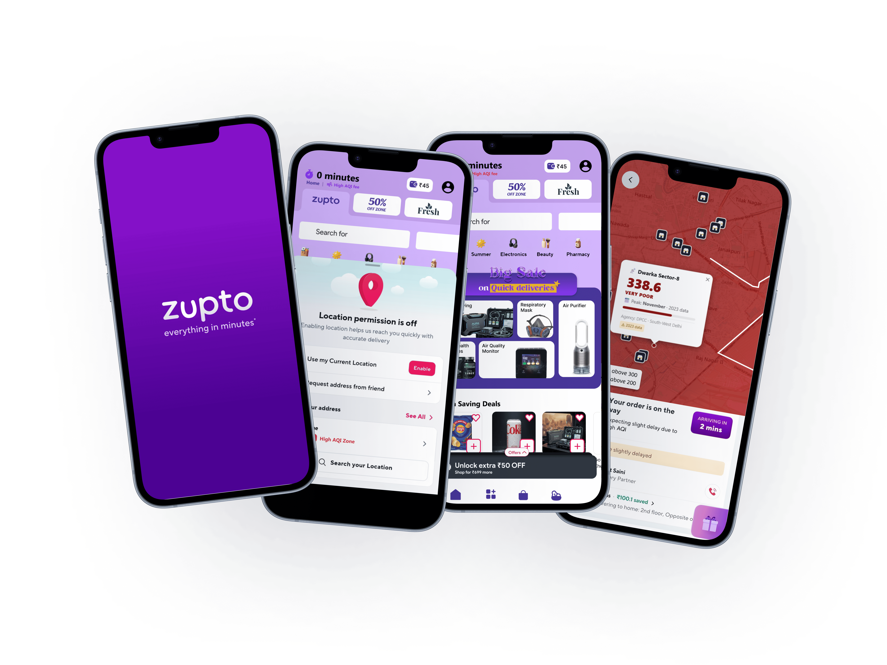
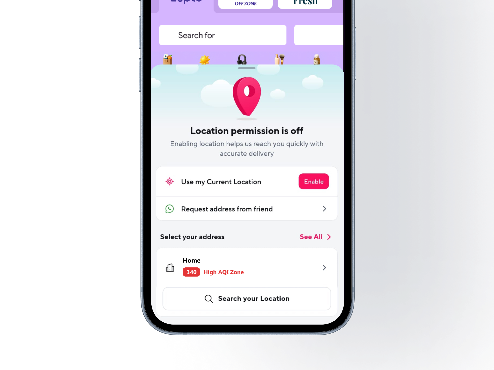
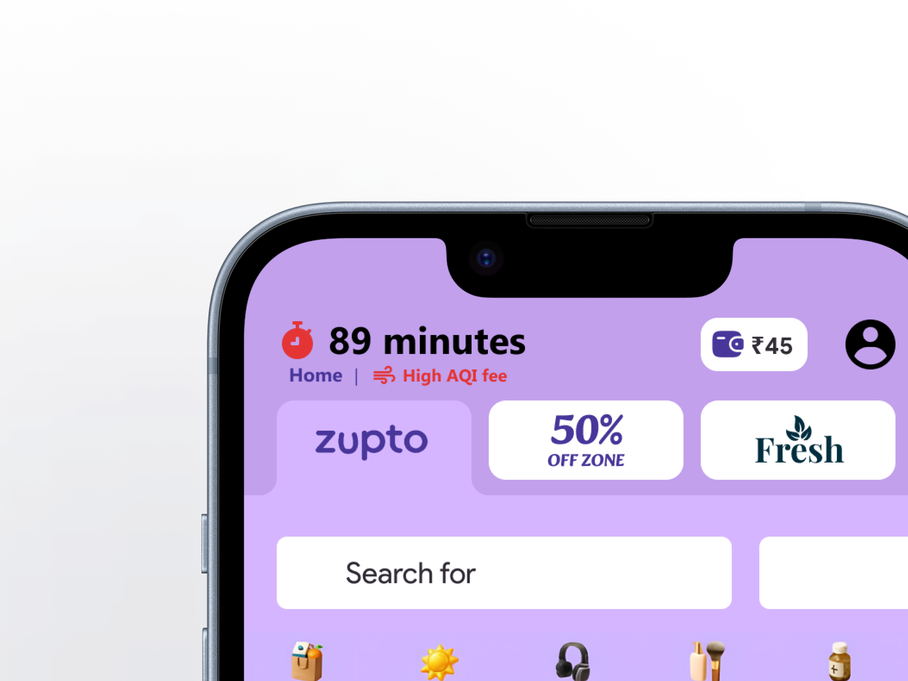
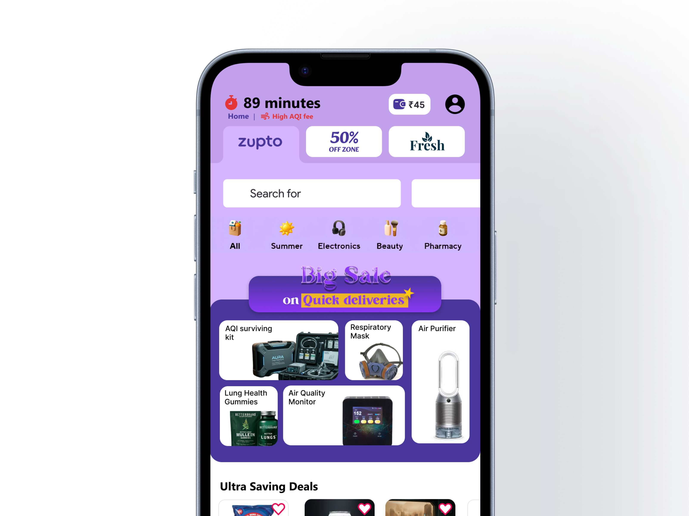
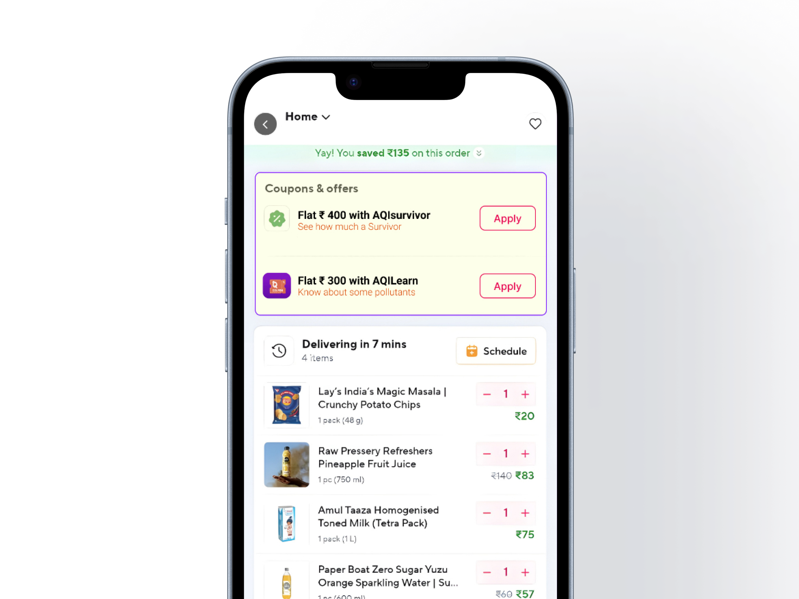
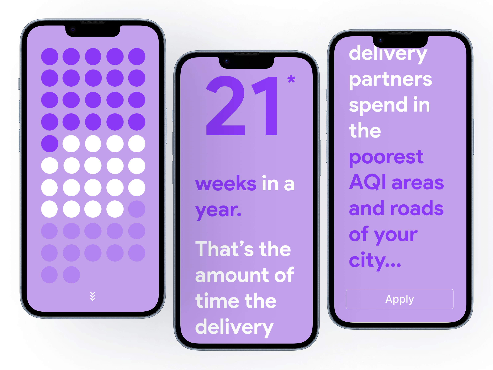
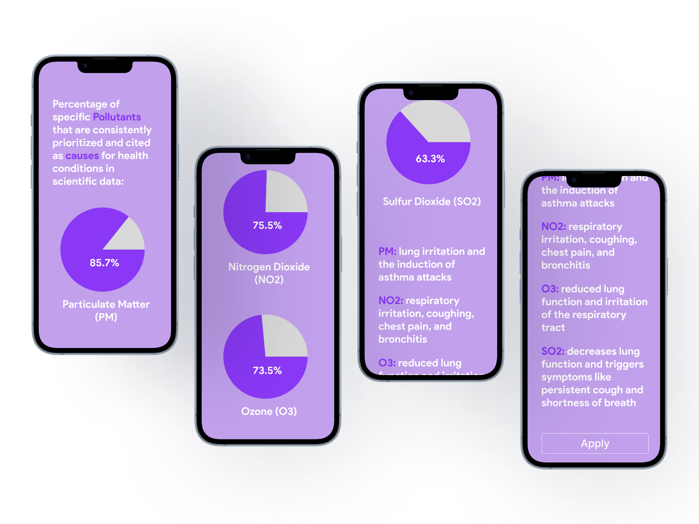

data visualisation
an average gig worker spends 8 to 12 hours a day outside — exposed, on a two-wheeler, breathing whatever the city is breathing. and in Delhi, what the city is breathing is the worst air in the world.
the government knows. the companies know. but they have no reason to move until the people who use these apps start asking questions.
so we targeted users — not because they are the most guilty, but because they are the most powerful. these companies exist to serve them. if users become aware and uncomfortable, the companies have no choice but to respond.
we chose a dummy app as the medium — because it's the easiest thing to onboard someone into. they think they know what they're doing. that assumption is the bait. the guilt trip comes after.
we divided the concept into two things-
we pulled data from CPCB's AQI monitoring stations and mapped it against the locations of dark stores across Delhi — the warehouses gig workers spend most of their time around, picking up and dropping off orders.
the finding was uncomfortable: most dark stores sit in the most crowded parts of the city. crowded areas drive more demand, more demand means more dark stores, more dark stores mean more congestion — and more pollution.
The map takes about 40 datasets, selects the highest AQI month, November, and presents it as a continuous color field over a live street map.
Zones were originally divided using Voronoi diagrams, with each location on the map allocated to its nearest monitoring station, resulting in zone boundaries that lay exactly in the middle of two stations. However, as a last step, we employed a heatmap, which is a better approach to represent anything in the air. It cannot be separated by borders.
using November's peak instead of a yearly average pushed the numbers from a forgettable 180 to the 300–380 Very Poor range. that's the air a rider breathes for 8 to 12 hours, every winter, every day.
we replicated Zepto's UI exactly — same layout, same visual language, same checkout flow.

but at every stage of the app, something is slightly different.

the address selection screen shows you the AQI of your delivery zone. most users don't know what kind of air they're living inside — this puts it in front of them, unavoidably.


your delivery time is not 10 minutes. it's hours — because in a high AQI zone, your rider is taking a longer route to avoid the most polluted corridors. you can bring that time down, but only if you purchase protective equipment for the rider.
[Loading screen]
your delivery time is not 10 minutes. it's hours — because in a high AQI zone, your rider is taking a longer route to avoid the most polluted corridors. you can bring that time down, but only if you purchase protective equipment for the rider.



tapping a coupon doesn't give you a discount. one shows how many hours a rider is exposed to toxic air in a year. the other opens infographics on airborne diseases — scientifically documented, unglamorous, real. nobody wants to read it. that's the point.
before you place your order, there's one more thing on the bill. a health tax — ₹29 on average. but it doesn't sit as one number. it explodes into a long scroll — every disease a rider is likely developing from years of breathing Delhi's air, each one assigned a fraction of the rupee. PM2.5. benzene. carbon monoxide. the diseases they cause. you have to scroll through all of it to place your order.
it's not accurate. it was never meant to be. the point is the scroll — the weight of the list, the realisation that ₹29 cannot actually cover any of this.
made with janvi beherani
View next casestudy > >